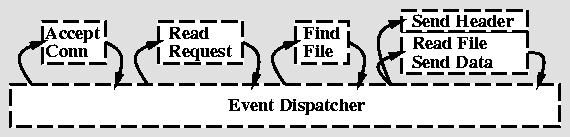

Web Server Architecture follows the following two approaches:
1. Concurrent Approach
2. Single-Process-Event-Driven Approach.
Concurrent approach allows the web server to handle multiple client requests at the same time. It
can be achieved by following methods:
1.Multi-process
2.Multi-threaded
3.Hybrid method.
In this a single process parentprocess initiates several single-threaded child processes and distribute incoming requests to these child processes. Each of the child processes are responsible for handling single request. It is the responsibility of parent process to monitor the load and decide if processes should be killed or forked.
Unlike Multi-process, it creates multiple single-threaded process.
It is combination of above two approaches. In this approach multiple process are created and each process initiates multiple threads. Each of the threads handles one connection. Using multiple threads in single process results in less load on system resources.
The single-process event-driven (SPED) architecture uses a single event-driven server process to perform concurrent processing of multiple HTTP requests. The server uses non-blocking systems calls to perform asynchronous I/O operations. An operation like the BSD UNIX select or the System V poll is used to check for I/O operations that have completed.
Page no - 2